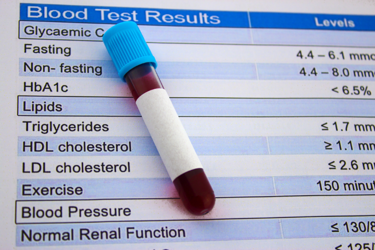
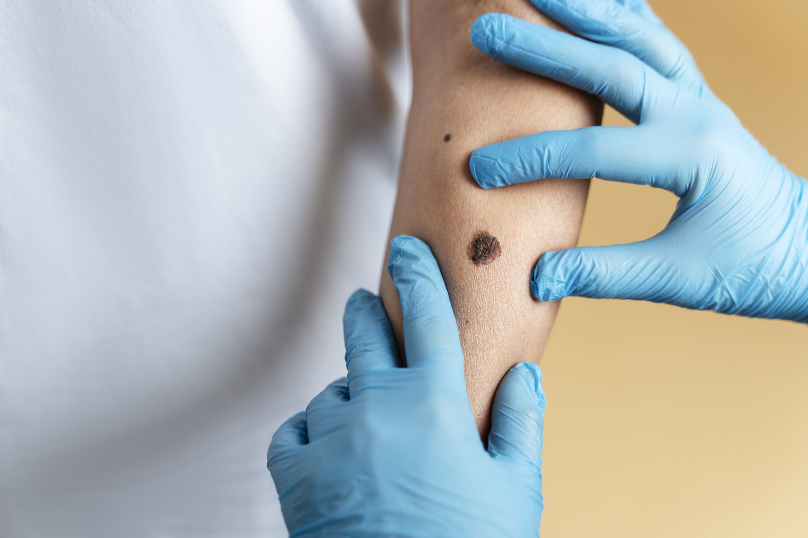
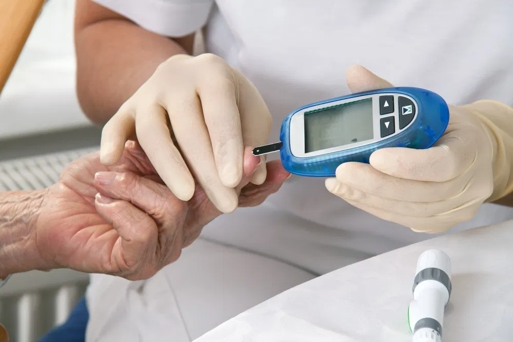
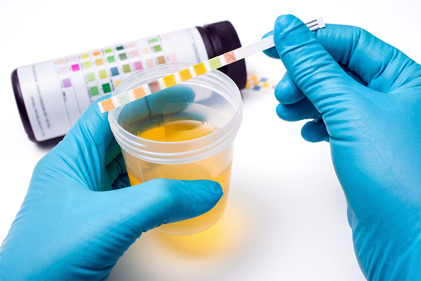
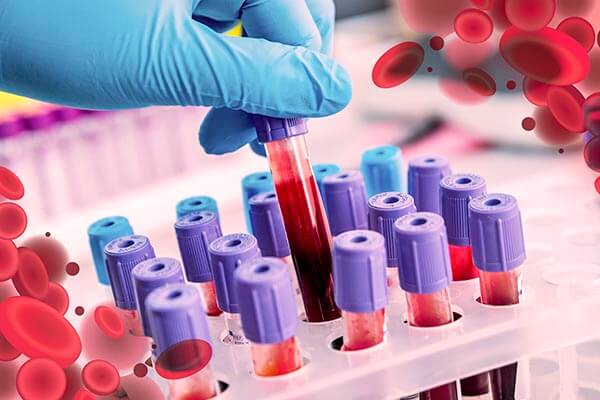

Este análisis básico permite detectar indicadores clave de funciones orgánicas, niveles de nutrientes e posibles infecciones.
Precio: S/ 40.00
Preparación: Requiere un ayuno de 8 a 12 horas (solo agua permitida).
Resultados: Dentro de 24 - 48 horas.

Perfil Lipídico
Mide los niveles de grasas en la sangre, incluyendo colesterol total, LDL, HDL y triglicéridos. Escrucial para evaluar el riesgo de enfermedad cardiovascular
Precio: S/ 50.00
Preparación:Requiere estrictamente un ayuno de 9 a 12 horas antes de la toma de muestra para obtener resultados precisos de los triglicéridos.
Resultados: Dentro de 24 - 48 horas.

Biopsia
Es la extracción de una pequeña muestra de tejido para su análisis microscópico. Es la más precisa para confirmar o descartar enfermedades como el cáncer.
Precio: S/ 300.00
Preparación: Depende del tipo de procedimiento.
Resultados:3 a 7 días hábiles (puede variar según la complejidad del análisis histopatológico).

Glucosa
Mide la cantidad de azúcar (glucosa) presente en la sangre. Es la prueba estándar para el diagnóstico y seguimiento de la diabetes.
Precio: S/ 30.00
Preparación:Se requiere un ayuno estricto de 8 a 10 horas. Solo se permite la ingesta de agua.
Valores:Normal: Menos de 100 mg/dL; Prediabetes: 100 mg/dL a 125 mg/dL; Diabetes: 126 mg/dL o superior.
Resultados:El mismo día o 24 horas.

Orina Completa
Análisis físico, químico y microscópico de la orina. Útil para detectar infecciones, enfermedades renales y otros problemas metabólicos.
Precio: S/ 25.00
Preparación:No requiere ayuno. Se recomienda recolectar la primera orina de la mañana.
Importante:La recolección debe hacerse en un recipiente estéril para evitar la contaminación de la muestra.
Resultados: Dentro de 24 - 48 horas.
Tomografía
Técnica de imagen médica que utiliza rayos X y computadoras para crear imágenes transversales detalladas del cuerpo.
Precio: S/ 350.00
Preparación:Con contraste: Se necesita un ayuno de 4 a 6 horas. Sin contraste: Generalmente no requiere ayuno.
Utilidad:Diagnostica fracturas complejas, detecta tumores y guia biopsias.
Resultados:La impresión de imágenes es inmediata; el informe médico suele estar disponible en 24 - 48 horas.
ADN
Análisis genético para identificar la composición única de su ADN. Se usa para pruebas de paternidad e identificar riesgos de enfermedades hereditarias..
Precio: S/ 700.00
Preparación:Las pruebas de saliva o hisopado bucal solo exigen no comer, beber, fumar o masticar chicle 30 minutos antes de la toma de muestra.
Resultados:1 a 6 semanas, según la complejidad del análisis de laboratorio requerido.

Hematología
Estudio de la sangre (eritrocitos), glóbulos blancos (leucocitos) y plaquetas. Es crucial para diagnosticar anemia, leucemia y problemas de coagulación.
Precio: S/ 50.00
Preparación:Generalmente, se requiere un ayuno de 4 a 8 horas.
Resultados: Dentro de 24 horas o menos.
En la Clinica Centenario del Norte
Tu salud,
es nuestra prioridad
Compra tus exámenes de laboratorio de forma rápida.
Accede a diferentes pruebas disponibles para cubrir todas tus necesidades de salud.
Recibe tus resultados en 24 horas directamente de manera virtual.
Agenda tu toma de muestra de manera fácil y rápida.